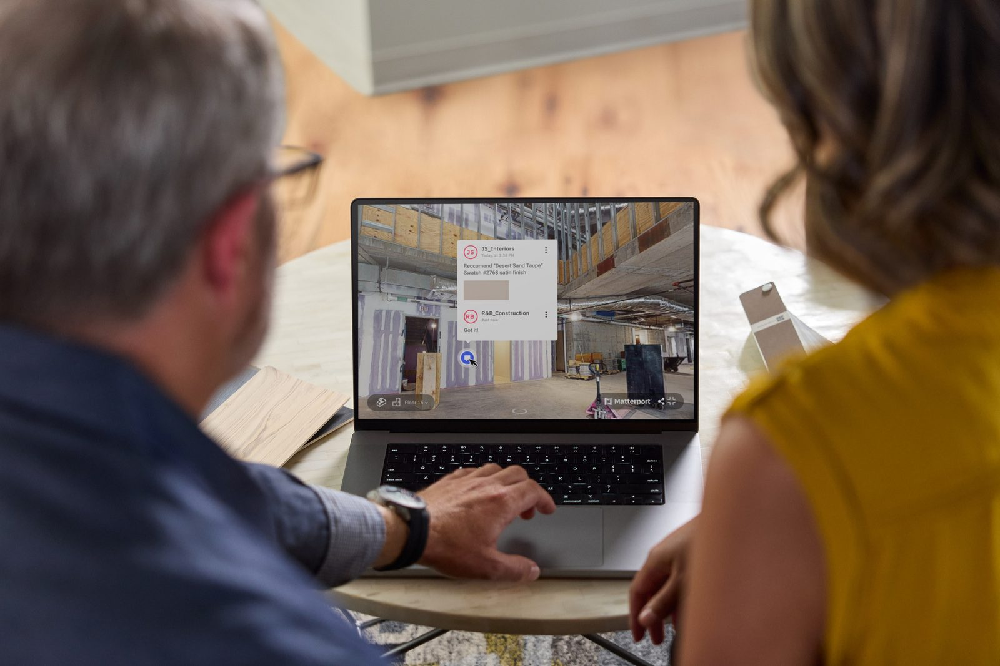
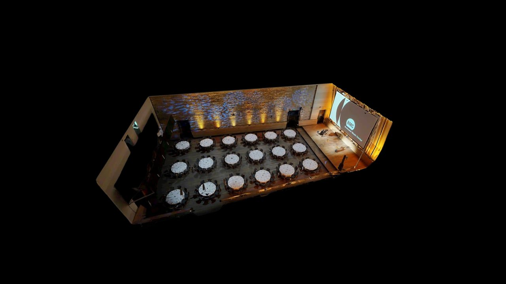
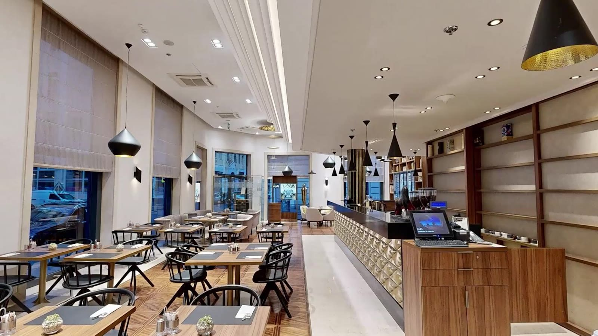
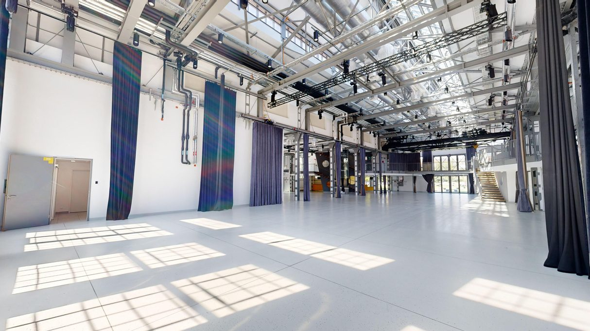
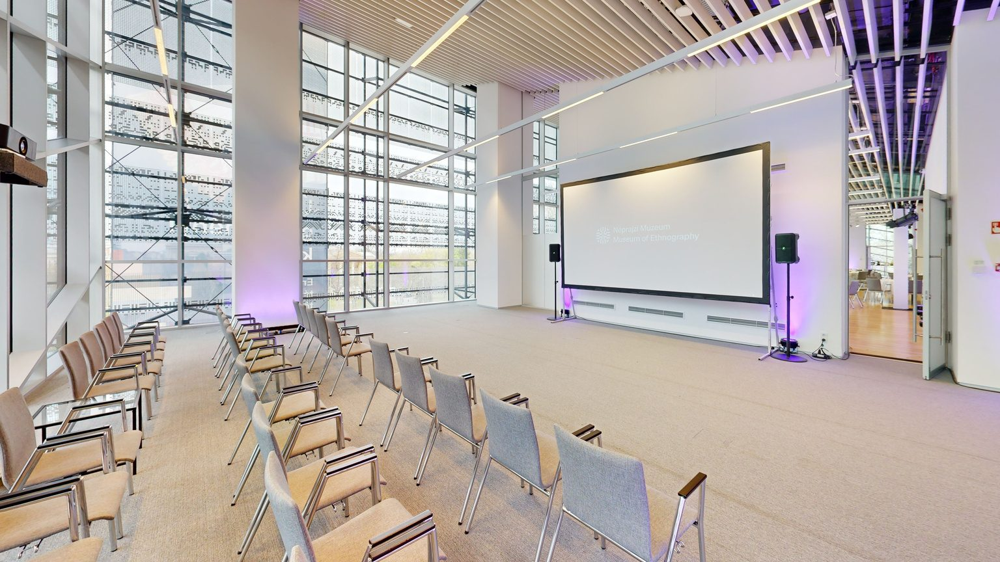
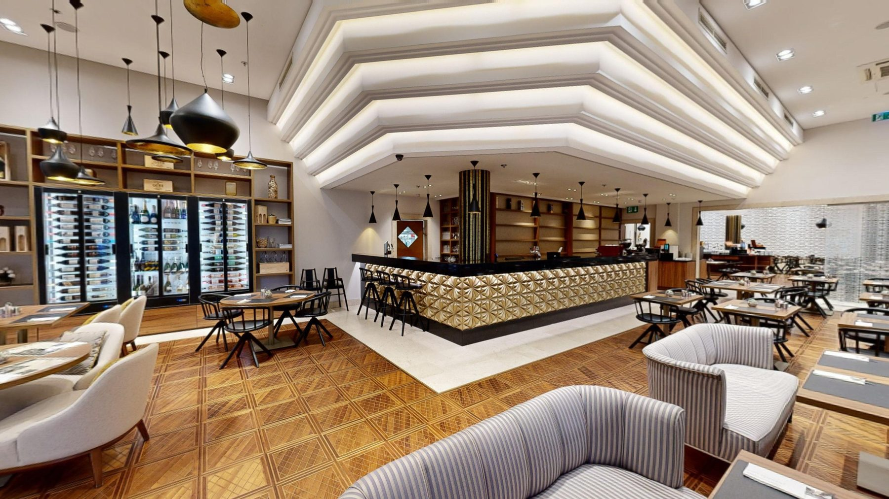
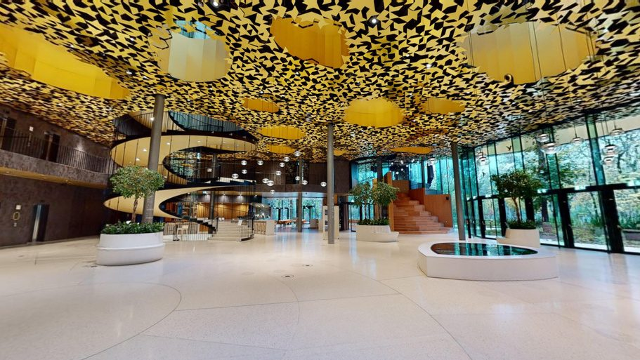

Hány személyes bejárás kell egy foglaláshoz?
3D séta konferenciákhoz, céges rendezvényekhez és incentive-utakhoz – rendezvényhelyszíneknek, szállodáknak és éttermeknek.
A foglalási döntés a bejárás előtt kezdődik
Egy konferencia vagy céges rendezvény szervezője fotók és alaprajz alapján ritkán érti meg igazán a teret. Ezért kérdez, egyeztet és személyes bejárást kér.
- Hosszú e-mail-váltásokpótlólagos kérdések a termekről, a technikáról, a megközelítésről
- Sok bejárás, kevesebb foglalása személyes bejárások egy részéből végül nem lesz üzlet
A rejtett költség: az értékesítő és a rendezvényes kolléga ideje – és a lassabb döntés.

Ma így megy – 3D sétával így mehet
A 3D séta nem váltja ki a személyes bejárást, hanem előszűr: személyesen az jön, aki már komolyan érdeklődik. A lépések helyszínenként eltérnek.

az európai szervezők közül a pontos online fotókra és videókra támaszkodik a döntésnél
több időt tölt a terek alaprajzainak online átnézésével
Cvent Planner Sourcing Report 2025, Európa · 600+ szervező, hat ország
Bizonyosságot akar, nem csak szép képeket
- Elfér-e?plénáris terem és szekciótermek, regisztráció, kávészünet, kiállítói standok, technika
- Hogyan mozognak a résztvevők?a terek kapcsolata, útvonalak, kiszolgáló terek
- Mit mutathat az ügyfelének?olyan anyagot, amelyet utazás nélkül is továbbküldhet
A helyszín bejárható digitális mása
- Egy linken, bárhonnanszámítógépen, tableten és telefonon, alkalmazás letöltése nélkül
- Kattintható információk a térbenbefogadóképesség, technikai adatok, letölthető teremadatlap
- Ott, ahol a szervező keresajánlatban, online egyeztetésen, a weboldalon és a Google-profilon
Akkor segít, amikor a szervező még nem járt ott, de már döntenie kell
Felkészültebb érdeklődők
Aki ajánlatot kér, már látta a teret – a beszélgetés a részleteknél kezdődik.
Kevesebb felesleges bejárás
Személyesen a komolyan érdeklődő szervező jön, akár külföldről is.
Gyorsabb döntés
A szervező egy linkkel továbbküldheti az ügyfelének és a kollégáinak.
Egy link – és a teljes döntési kör látja
17% – a szervezők ennyien mondják, hogy a 3D séta javítana leginkább a helyszínek ajánlatain. A link az ajánlat része lehet.
Cvent, 2025
A szervező előre szűr: személyes szemle csak a komolyan szóba jövő helyszíneken.
Az ügynökség továbbküldi a céges megrendelőnek, aki utazás nélkül is jóváhagyhatja a helyszínt.
Színpad, kiállítói standok, technika: tájékoztató méretek és alaprajz a rendezvénytechnikának.
QR-kód a regisztrációs anyagban: a vendégek előre körülnézhetnek a helyszínen.
Többnyelvű 3D séta azoknak, akik csak a döntés után utaznak Magyarországra.
Rendezvényhelyszín, szálloda, étterem – mire jó?

A szervező a döntés előtt látja, mit kap
- Termek és elrendezéseka felvett elrendezés bejárható; a méretek és az alaprajz segítenek megtervezni a bankett-, színházi vagy koktélelrendezést
- Kiszolgáló terek és megközelítésregisztráció, rakodás, akadálymentesség és a terek kapcsolata egy helyen, az ajánlathoz csatolva
- Különleges helyszínekkastélyok, birtokok, pincészetek: a nehezebben megközelíthető helyeken a távoli megtekintés különösen sokat segít
Egy felvétel, több üzleti cél
- Rendezvény- és konferenciatermeka kiindulópont: a MICE-értékesítés támogatása, szekciótermekkel együtt
- A teljes vendégélménylobbi, étterem és bár, közösségi terek, terasz, szobatípusok – foglalás előtt megmutatva

Különterem és vendégélmény
- Különterem és rendezvényekcéges vacsorák, csoportos és magánrendezvények: a szervező előre látja a különtermet és a vendégteret
- A hangulat is eladjaaz átlagos vendég is körülnézhet asztalfoglalás előtt, a weboldalon vagy a Google-profilon
- Menü és foglalási link a térbenmenü, kapacitás és foglalási link közvetlenül a 3D sétában
Helyszínek, amelyeket bejárhatóvá tettünk

Rendezvényterem
3D séta megnyitása ↗
Konferenciaterem
3D séta megnyitása ↗
Szálloda
3D séta megnyitása ↗
Kulturális rendezvénytér
3D séta megnyitása ↗A 3D-s bejárás nem csupán látványos, de rendkívül praktikus is; könnyedén megoszthatom partnereinkkel, így ők maguk is bejárhatják a helyszínt. […] Kiemelkedő volt a partner segítőkész és rugalmas hozzáállása.
Szállodák és helyszínek, amelyek már így értékesítenek
Lindner Hotels
30+ helyszín teljes 3D sétával: több online aktivitás és több minősített érdeklődő.
The Ivy Collection
50 különterem digitalizálva – kevesebb személyes bemutatóra van szükség.
Szervezők, Észak-Amerika
Ennyien töltenek több időt a terek alaprajzainak online átnézésével.
Források: nemzetközi szálloda- és rendezvényipari esettanulmányok (2024) · Cvent Planner Sourcing Report 2025

Adat a döntéshez és a tervezéshez
- Külön link vagy QR-kód csatornánként és kampányonként
- Weboldal, ajánlat, hírlevél, MICE-esemény, kiállítás
- Látszik, honnan érkeznek a megtekintések
- Tájékoztató méretek a sétában: elfér-e a színpad, a stand
- 2D alaprajz az ajánlathoz és a berendezési tervhez
- Igény szerint pontfelhő, előre egyeztetett célra
A megtekintési adatok a platform elérhető analitikája szerint követhetők.
Bárhol működik, semmit sem kell telepíteni
Felhőben fut
Nem foglal tárhelyet a weboldalon: a 3D séta külső felhőből töltődik be.
Minden eszközön
Telefonon, tableten és számítógépen, böngészőből, alkalmazás nélkül.
Egy linken megosztható
Ajánlatban, e-mailben, online egyeztetésen, weboldalon és Google-profilon.
QR-kód eseményeken
MICE-eseményen, szakkiállításon, nyomtatott anyagon: a telefonnal azonnal belép.
Külön linkek, mérhetően
Minden csatorna és kampány saját linket vagy QR-kódot kaphat.
Mindig friss
Változik a menü, az elrendezés vagy az ajánlat? Az információs pontokat frissítjük.
Partnerként, a felméréstől a gondozásig
Felmérés
A helyszín és a valódi felhasználási cél megértése, majd helyszíni 3D felvétel egyeztetett időpontban, akár nyitvatartáson kívül.
Feldolgozás
Rendezett kezdőnézet, szintek és helyiségek, információs pontok a térben.
Közös bevezetés
Végigvesszük a kollégákkal, hogyan használják a napi munkában – a saját feladataikra szabva.
Gondozás
Tartalomfrissítés, alaprajz, Google Street View, igény szerint drónfelvétel és többnyelvűség.
A tartalmat (szöveg, menü, fotó) a helyszín adja, mi elhelyezzük és gondozzuk; a bevezetést közösen végezzük.
Amit a helyszínek elsőként kérdeznek
Nem helyettesíti a személyes szemlét, hanem előszűr: személyesen az jön, aki már komolyan érdeklődik.
Előre egyeztetett időpontban, akár nyitvatartáson kívül dolgozunk. Az időtartam a helyszín méretétől függ.
Az információs pontok (menü, kapacitás, linkek) bármikor frissíthetők. Nagyobb átépítésnél a teret is újra felvesszük.
Nem feltétel. Linkként és QR-kódként is működik: ajánlatban, e-mailben, eseményen, a Google-profilon.
Közösen vezetjük be a kollégákkal, a saját feladataikra szabva. A napi használat egy link vagy QR-kód megosztása.
A tartalmat a helyszín adja, mi elhelyezzük a 3D sétában és gondozzuk.
Előre egyeztetjük, mely terek kerülnek a sétába. A belső, nem nyilvános helyiségek kimaradhatnak.
Egyszeri kialakítási díj és rendszeres díj (tárhely és gondozás). A pontos összeg a helyszín méretétől és a kért tartalmaktól függ, ezt az ajánlat rögzíti.
15 perc, és megnézzük, melyik termüknél éri meg
Online bemutató: közösen bejárunk egy elkészült helyszínt, és végiggondoljuk, mely terekkel érdemes kezdeni.
Elég, ha a levélre két időponttal válaszol.